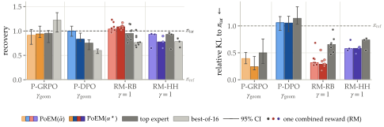
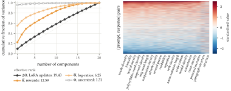
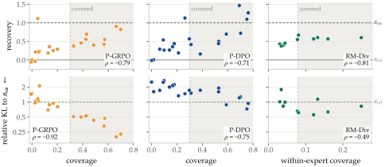
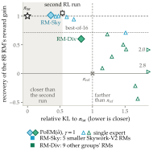

Post-training with reinforcement learning (RL) is expensive, sometimes unstable, and has to be redone every time the reward changes. Our motivation is to predict and preview the RL post-trained model on a new reward. Concretely,
Given a new reward function, is it possible to predict the policy RL would produce without actually training on that reward?
We start from the simple theoretical observation that if the new reward is a linear combination of the existing rewards, the optimal policy has a closed form: a weighted product of the reference model and the policies trained on the existing rewards, whose weights can be estimated by linear regression on a small set of reward evaluations. A new reward, however, rarely decomposes linearly into a small fixed basis.
Despite this, we find that the policies learned from existing rewards often span a lower dimensional space in log-probabilities than the reward geometry suggests. Even when the rewards are not linearly connected, the matrix of log-ratios against the reference model spans far fewer effective directions. A policy trained on a new reward can therefore lie inside this subspace even when the reward is not a linear combination of the basis rewards.
Inspired by these observations, we propose PoEM (Product of Experts Mixing), which predicts the RL outcome on a new reward by composing models previously trained with RL on other rewards. A coverage score computed before decoding specifies which new policies PoEM can approximate.
Assume that we have access to a set of basis policies, where each basis policy is trained with RL from a shared reference model on its reward with a KL penalty, . The optimal policy is the reference policy tilted by the reward, .
If the new reward is a linear combination of the existing rewards, the optimal policy would be a product-of-experts. In log space, the optimal target policy adds the basis policies' weighted log-ratios , which explain how far each basis policy has moved from the reference model, to the reference model's log-probabilities:
By rearranging the optimum, each policy log-ratio is also an implicit reward. So we recover the weights by regressing the new reward's scores on a small calibration set onto the basis policies' log-ratios . The calibration set is a few hundred prompts with four responses each, sampled from the reference model and basis policies. We can then use these weights to sample autoregressively from the product of experts at inference time.
We test this on different bases, or sets of expert models trained with RL from Qwen3-0.6B on different programmatic rewards (P‑GRPO, P‑DPO) or on reward models (RM‑RB, RM‑HH, RM‑Div, RM‑Sky). When the new reward combines the basis rewards, PoEM recovers most of RL's reward improvement (Figure 2).

So far we relied on the strong assumption that the new reward is a linear combination of the basis rewards. PoEM, however, composes the basis policy log-ratios, , rather than their rewards. The question is therefore whether the target policy's log-ratio can lie near the subspace spanned by the basis log-ratios, even when the target reward is not a linear combination of the basis rewards.
RL policies vary along fewer directions than their rewards. Across the twenty P‑GRPO basis policies, the effective rank of the policy log-ratio matrix is 6.3, despite nearly orthogonal parameter updates (19.4) and higher rank basis rewards (12.6) (Figures 3 and 4). The policies reachable by composing the basis policies therefore form a low dimensional space that the basis covers densely. We measure whether a new target policy lies in this space, using a coverage score (Section 3).

Held-out policies can be easier to represent than their rewards. On RM‑Div, the other basis policies' log-ratios explain more variation of a held-out expert's log-ratio than the other rewards explain of its reward, for all ten experts. Policies trained on different rewards thus change the reference policy along directions that can be reused for a new reward.
To test this, we hold out each expert of P‑GRPO, P‑DPO and RM‑Div in turn and predict it from the others, without ever using it. Before decoding, a coverage score measures how well the other basis policies' log-ratios predict the new reward on held-out calibration prompts11The share of the new reward’s variation across calibration responses that the fit predicts on prompts it was not fit on, averaged over random splits of the prompts.. We score each prediction by its recovery, the share of RL's reward gain it reaches, and its relative KL to 22 per token, measured on ’s own responses to the evaluation prompts., below 1 when it is closer to than the reference model.

Coverage predicts which rewards PoEM can reach (Figure 5, Table 1). On all three bases, coverage ranks the reward error, and covered rewards recover more of RL's gain than the others. A high coverage means that the basis policies already span the direction in which RL moves the policy. Held-out rewards remain harder than combined ones, so coverage is most useful as a filter on which predictions to use: it rarely passes a failure. Raising the composition strength does not rescue uncovered rewards, since it cannot add a missing direction.
A prediction is especially interesting when RL is expensive. For instance, when we are raining a policy using a large reward model that requires scoring every rollout. We predict RL on an 8B reward model from RM‑Sky, basis policies trained on its smaller models from a similar family,33Skywork-Reward-V2 models from 0.6B to 4B parameters, on Qwen3 and Llama 3.2. All policies were trained from Qwen3-0.6B. using the 8B model only to score the calibration set. PoEM matches RL's reward gain and is close to in comparison to RL's training variation (Figure 6). We also compose RM‑Div, whose reward models are completely different. PoEM recovers less of the reward gain there, but is still closer to than any of its basis policies alone.

Our findings show that a set of trained RL policies carries enough structure to compose new reward behavior at inference time. The strong assumption that rewards combine linearly is replaced by a much weaker geometric one on policy log-ratios. This also suggests that RL with different rewards might move a model along a few shared directions.
Approximate RL on expensive rewards. RL evaluates the target reward on every rollout, while PoEM evaluates it only on a small calibration set. RL on a large reward model or a human rater could therefore be approximated with basis policies trained on cheap rewards.
Preview a reward before training on it. PoEM shows how a candidate reward would change the policy before an RL run starts. This lets one inspect the behaviors of the post-trained model that the reward does not score directly.
More held-out responses and the image diffusion examples are in the gallery.
@inproceedings{hamidieh2026poem,
title = {PoEM: Predicting RL Outcomes from Existing Policies},
author = {Hamidieh, Kimia and Daras, Giannis and Torralba, Antonio},
booktitle = {Advances in Neural Information Processing Systems},
volume = {39},
year = {2026}
}